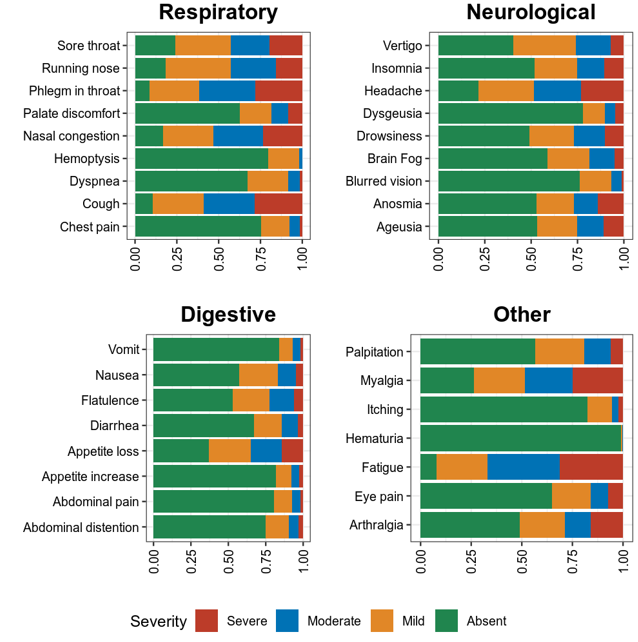
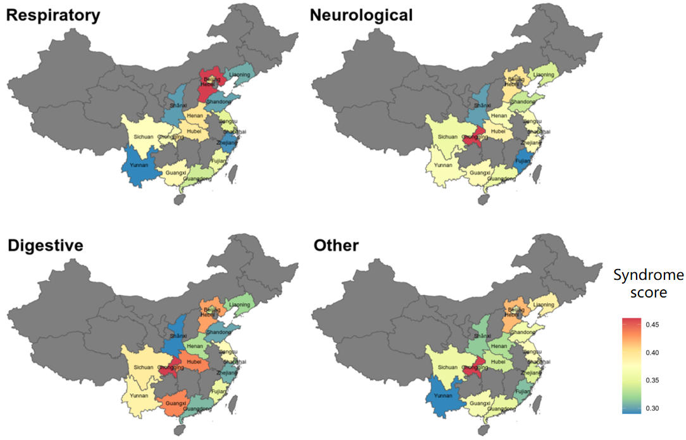
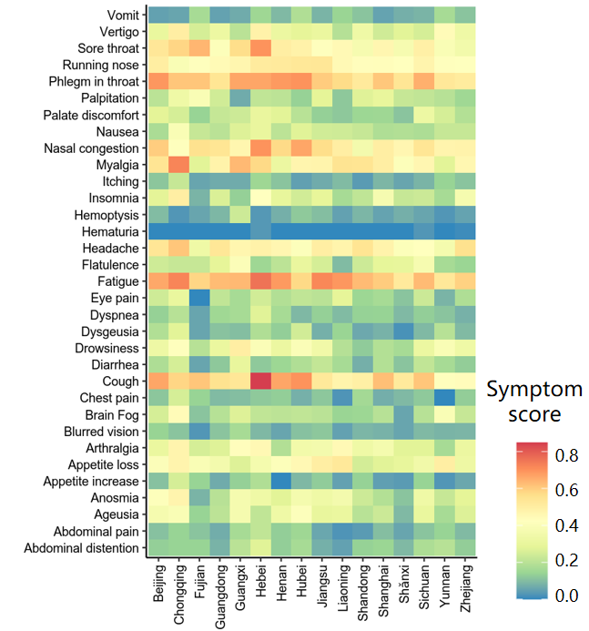

A COVID-19 survey in China¶
In Dec 2022, the COVID-19 restriction was end.
We conducted a 3-week on-line survey to measure the characteristics to measure the characteristics of COVID-19 patients in China.
We investigated:
Symptom spectrum of COVID-19:
{kind=link}
Cluster of COVID-19 symptoms:

Regional distribution of COVID-19 syndromes:
{kind=link}
Regional distribution of COVID-19 symptoms:
{kind=link}
And, measure the association between COVID-19 symptoms and population characteristics, vaccination, and medication.
Questionnaire Data¶
The questionnaire was open for around 3 weeks, from 22th Dec 2022 to 17th Jan 2023.
552 questionnaires were collected.
The data is in Chinese. Please see our code about how to clean this data.
You can download the data at here.
Analysis: preparation¶
We used R 4.0.3 for analysis.
Load packages:
libs = c('openxlsx', 'stringr', 'dplyr', 'stringi', 'R.utils', 'ggplot2', 'ggpubr', 'ggsci', 'mapchina', 'sf', 'data.table','NbClust', 'igraph', 'factoextra')
lapply(libs, require, character.only = TRUE)
options(stringsAsFactors=F)
sf::sf_use_s2(FALSE)
Define functions:
# calculate proportion of a given var for all, male, female participants
# e.g,
# temp = data.frame(sex=c('Male', 'Female'), var=c(1, 0))
# get_prop(temp, 'var')
get_prop = function(df, var){
for (sex1 in c('Male|Female', 'Male', 'Female')){
df1 = df%>%filter(grepl(sex1, sex))
tab = table(df1[,var])
frq = data.frame(var=names(tab), n=as.numeric(tab))
frq = frq%>%mutate(n=paste0(n,'(', sprintf('%.2f', n*100/sum(tab)),'%)'))
print(paste0('distribution of ', ifelse(sex1=='Male|Female', 'all', tolower(sex1)), ' participants in ', var, ':'))
print(frq)
}
}
# convert character vector to numeric
# e.g, df = df%>%mutate_if(is_numeric,as.numeric)
is_numeric <- function(x) {
!any(is.na(suppressWarnings(as.numeric(na.omit(x))))) & is.character(x)
}
Analysis: data cleaning and description¶
We conducted data cleaning by translating Chinese to English, combining groups with small samples, etc. Description was also performed.
You may clone our repository, which contains our data, results, and plots:
git clone https://github.com/zhanghaoyang0/covid_survey.git
cd covid_survey
Or you can just download our data and performed the below analysis. If you do so, pleasue change the path in the code.
Load data and clean:
## questionaire data
df = read.xlsx('data/covid_survey_20230112.xlsx', sheet=1) # questionaire
names(df) = gsub('/|，|？|“|”', '', names(df)) # remove Chinese punctuations
names(df) = gsub('?', '', names(df), fixed=T)
names(df) = str_replace(names(df), '在感染后是否有出现以下[\U4E00-\U9FFF\U3000-\U303F]+症状:', '')
names(df) = str_replace(names(df), '[（][\U4E00-\U9FFF\U3000-\U303F|1-9]+[）]', '')
## drop unused items and atypical symptons
drop_cols = c('提交时间', '答题时间', '喉咙有刀割感', '吞咽时疼痛', '喉咙嘶哑', '喉咙干痒', '性欲减退', '生理期异常', '肾脏部位疼痛', '流泪', '打喷嚏')
df[,drop_cols] = NULL # drop atypical symptons
names(df)
## replace chinese with english
dict1 = read.xlsx('data/covid_survey_20230112.xlsx', sheet=2)
dict2 = read.xlsx('data/covid_survey_20230112.xlsx', sheet=3)
dict = rbind(dict1, dict2[,c(1,4)])
print('chinese items to english:')
print(head(dict))
for (i in 1:nrow(dict)){
names(df)[names(df)==dict[i, 1]] = dict[i, 2]
}
Age and sex:
df = df%>%mutate(age=gsub('岁', '', age))%>%
mutate(age=ifelse(age%in%c('41-50', '51-60', '61-70'), '>40', age))%>%
mutate(age=ifelse(age%in%c('12-18', '18-24', '6-12', '3-6'), '<24', age))%>%
mutate(age=factor(age, levels=c('<24', '24-30', '31-40', '>40')))
df = df%>%mutate(sex=factor(ifelse(sex=='女','Female', 'Male'), levels=c('Female', 'Male')))
table(df$sex)
get_prop(df, 'age')
Disease duration:
# assume interval is left closed and right open, modify to reduce confusing
df$infect_duration[df$infect_duration=='3～5天'] = '3~4天'
df$infect_duration[df$infect_duration=='5~7天'] = '5~6天'
df$infect_duration[df$infect_duration=='7~10天'] = '7~9天'
df = df%>%mutate(infect_duration=ifelse(infect_duration%in%c('7~9天', '10天以上'), '>7 day', infect_duration))%>%
mutate(infect_duration=ifelse(infect_duration%in%c('', '小于3天'), '<3 day', infect_duration))%>%
mutate(infect_duration=gsub('天', ' day', infect_duration))%>%
mutate(infect_duration=gsub('~', '-', infect_duration))%>%
mutate(infect_duration=factor(infect_duration, levels=c('<3 day', '3-4 day', '5-6 day', '>7 day')))
get_prop(df, 'infect_duration')
# trim fever_duration
df$fever_duration = sapply(df$fever_duration, function(x){strsplit(x, '[(]')[[1]][1]})
df = df%>%mutate(fever_duration=ifelse(is.na(fever_duration), 'no reply', fever_duration))%>%
mutate(fever_duration=gsub('天', ' day', fever_duration))%>%
mutate(fever_duration=ifelse(fever_duration%in%c('1 day', '<1 day'), '≤1 day', fever_duration))%>%
mutate(fever_duration=factor(fever_duration, levels=c('no reply', '≤1 day', '2 day', '3 day', '>3 day')))
get_prop(df, 'fever_duration')
Infect route:
df = df%>%mutate(
infectway_entertainment=factor(as.numeric(grepl('消费场所', infect_way))),
infectway_work=factor(as.numeric(grepl('工作场所', infect_way))),
infectway_family=factor(as.numeric(grepl('在家被家人传染', infect_way))),
infectway_traffic=factor(as.numeric(grepl('公共交通', infect_way))),
infectway_hosp=factor(as.numeric(grepl('医疗场所', infect_way))))
for (i in c('infectway_entertainment', 'infectway_work', 'infectway_family', 'infectway_traffic', 'infectway_hosp')){
print(i)
get_prop(df, i)
}
Vaccination:
df[df$how_long_lastvac=='', 'n_vac'] = '0' # if a person report n_vac but not how_long_lastvac, treat n_vac as NA
df = df%>%mutate(n_vac=ifelse(n_vac%in%c(3, 4), '≥3', n_vac))%>%
mutate(n_vac=factor(n_vac, levels=c('0', '1', '2', '≥3')))
df = df%>%mutate(how_long_lastvac=ifelse(how_long_lastvac=='', 'no_vac', how_long_lastvac))%>%
mutate(how_long_lastvac=gsub('个月', ' month', how_long_lastvac))%>%
mutate(how_long_lastvac=ifelse(how_long_lastvac%in%c('<3 month', '3-6 month'), '<6 month', how_long_lastvac))%>%
mutate(how_long_lastvac=factor(how_long_lastvac, levels=c('no_vac', '<6 month', '6-12 month', '>12 month')))
get_prop(df, 'n_vac')
get_prop(df, 'how_long_lastvac')
Medication:
# the 'drug_use' have been grouped to four groups, by hand
drugs = c('ibuprofen_use', 'acetaminophen_use', 'chnmed_usd')
df[, drugs][is.na(df[, drugs])] = 0
for (drug in drugs){
print(drug)
get_prop(df, drug)
df[,drug] = as.factor(df[,drug])
}
Calculate syndrome score with symptom score, normalize to 0-1:
## calculate syndrome score with symptom score, normalize to 0-1
syndromes = unique(dict2$syndrome)
symptoms = list()
for (i in syndromes){
symptoms[[i]] = dict2%>%filter(syndrome==i)%>%pull(item_eng)
}
print(symptoms)
print(sum(is.na(df[,unlist(symptoms)]))) # number of NA
for (syndrome in syndromes){
score = rowSums(df[,symptoms[[syndrome]]])/length(symptoms[[syndrome]])/3 # normalize to 0-1
df[,paste0(syndrome, '_score')] = score
}
Region:
## region
df$region = gsub('维吾尔|壮族', '', df$region)
regions = c()
for (i in 1:nrow(df)){
item = df[i, 'region']
item1 = strsplit(item, '自治区|自治州|特别行政区|省|市')[[1]][1]
regions = c(regions, item1)
}
df$region = regions
# replace chn with pinyin
data(china)
china = china%>%mutate(region=gsub('省|市|回族|壮族|维吾尔|特别行政区|自治区', '', Name_Province))
china = china%>%group_by(region)%>%dplyr::summarise(geometry=st_union(geometry))
replace = data.frame(region=china$region,
region1 = c('Shanghai', 'Yunnan', 'Neimenggu', 'Beijing', 'Taiwan', 'Jilin', 'Sichuan', 'Tianji',
'Ningxia', 'Anhui', 'Shandong', 'Shānxi', 'Guangdong', 'Guangxi', 'Xinjiang', 'Jiangsu', 'Jiangxi', 'Hebei',
'Henan', 'Zhejiang', 'Hainan', 'Hubei', 'Hunan', 'Macau', 'Gansu', 'Fujian', 'Tibet', 'Guizhou', 'Liaoning',
'Chongqing', 'Shǎnxi', 'Qinghai', 'Hong Kong', 'Heilongjiang'))
china = china%>%merge(replace, 'region')%>%select(-region)%>%rename(region=region1)
df = df%>%merge(replace, 'region')%>%select(-region)%>%rename(region=region1)
print(table(df$region))
# sample size for each region
tab = table(df$region)
tab = data.frame(cbind(names(tab), tab))
pop_tab = tab%>%rename(n=tab, region=V1)%>%mutate(n=as.numeric(n))%>%arrange(n)
print(pop_tab)
Analysis: regression¶
We used regression to measure the association between symptoms and population characteris, vaccination, and medication.
# we use linear regression to test if syndrome score varired in different population
# we use logistic regression to test if symptom varired in different population
# in each regression, we add age and sex as covariate
covars = c('age', 'sex')
test_vars = c('agesex', 'how_long_lastvac', 'n_vac',
'infectway_work', 'infectway_family', 'infectway_traffic', 'infectway_hosp',
'ibuprofen_use', 'acetaminophen_use', 'chnmed_usd', 'lianhua_use') # the first mean we only include age and sex in reg
outcomes = c(paste0(c('Respiratory', 'Neurological', 'Digestive', 'Other'), '_score'), unlist(symptoms))
out = c()
for (test_var in test_vars){
if (test_var=='agesex'){formula = formula('y~age+sex')}else{
formula = formula(paste0('y~age+sex+', test_var))}
# when var is how_long_lastvac, remove samples without vac
if (test_var=='how_long_lastvac'){
df1 = droplevels(df%>%filter(how_long_lastvac!='no_vac')) # drop level
} else {df1 = df}
for (outcome in outcomes){
print(outcome)
# regression
df1$y = df1[,outcome]
link = 'gaussian' # for linear reg
if (!grepl('_score', outcome)) {
df1$y = ifelse(df1$y==0, 0, 1) # binary outcome, logistic reg
link = 'binomial' # for logistic reg
}
reg = glm(formula, df1, family=link)
coef = data.frame(summary(reg)$coefficients)%>%tibble::rownames_to_column('var')
coef = coef[2:nrow(coef), c(1, 2, 3, 5)]
names(coef) = c('var', 'beta', 'se', 'p')
# calculate distribution in sub population, n(%) or mean±sd
reg_vars = strsplit(as.character(formula)[3], ' + ', fixed=T)[[1]]
if (test_var!='agesex'){reg_vars = reg_vars[!reg_vars%in%c('age', 'sex')]} # we dont show coef of age and sex when testing other var
for (reg_var in reg_vars){
for (group in levels(df1[,reg_var])){
temp = df1%>%filter(df1[,reg_var]==group)%>%pull(y)
coef1 = coef[coef$var==paste0(reg_var, group), c('beta', 'se', 'p')]
if (nrow(coef1)== 0){coef1 = c('NA', 'NA', 'NA')}
if (group==levels(df1[,reg_var])[1]) {coef1 = c('Ref.', 'NA', 'NA')}
d1 = d2 = d3 = NA
if (!grepl('_score', outcome)){
d1 = paste0(sum(temp==1), ' (', round(sum(temp==1)/length(temp)*100,2), '%)')
d2 = paste0(sum(temp==0), ' (', round(sum(temp==0)/length(temp)*100,2), '%)')
} else {d3 = paste0(sprintf('%.2f',mean(temp)), '±', sprintf('%.2f',sd(temp)))}
# formal name
if (grepl('score', outcome)){outcome1 = gsub('_', ' ', outcome)}else{
outcome1 = dict2%>%filter(item_eng==outcome)%>%pull(item_eng1)
}
out = c(out, outcome1, test_var, reg_var, group, d1, d2, d3, unlist(coef1))
}
}
}
}
res = data.frame(matrix(out, ncol=10, byrow=T))
names(res) = c('outcome','test_var', 'reg_var', 'level', 'ncase', 'nctrl', 'mean', 'beta', 'se', 'p')
res1 = res%>%filter(p<0.05)
write.csv(res1, './result/reg.csv', row.names=F, quote=F)
# extract significant result
res1 = data.frame()
for (test_var1 in test_vars){
for (outcome1 in unique(res$outcome)){
sub = res%>%filter(test_var==test_var1&outcome==outcome1)
if (!any(as.numeric(sub%>%filter(p!='NA')%>%pull(p))<0.05)){next}
res1 = rbind(res1, sub)
}
}
Analysis: plot¶
Bar plot for servere of sympytoms:
map = data.frame(score=c(0:3), score1=c('Absent', 'Mild', 'Moderate', 'Severe'))
out = c()
for (i in unlist(symptoms)){
for (j in c(0:3)){
prop = sum(df[,i]==j)/nrow(df)
out = c(out, i, j, prop)
}
}
df_p = data.frame(matrix(out, ncol=3, byrow=T))
df_p = df_p%>%mutate_if(is_numeric,as.numeric)%>%rename(sympton=X1, score=X2, prop=X3)
df_p = df_p%>%merge(map, 'score')%>%mutate(score1=factor(score1, levels=c('Severe', 'Moderate', 'Mild', 'Absent')))
df_p%>%merge(dict2, by.x='sympton', by.y='item_eng')%>%select(syndrome, sympton, score1, prop) # add syndrome
plots = list()
for (syndrome in syndromes){
df_p1 = df_p%>%filter(sympton%in%symptoms[[syndrome]])
df_p1 = df_p1%>%mutate(sympton=gsub(paste0(syndrome, '_'), '', sympton))
xlevels = df_p1%>%filter(score1=='Absent')%>%arrange(prop)%>%pull(sympton)
df_p1$sympton = factor(df_p1$sympton, levels=xlevels)
df_p1 = df_p1%>%rename(item_eng=sympton)%>%merge(dict2, 'item_eng')%>%rename(sympton=item_eng1) # repalce symptoms with their formal names
p = ggplot(df_p1, aes(x = sympton, weight = prop, fill = score1))+
geom_bar( position = "stack") +
xlab('') + ylab('') + labs(fill = 'Severity') +
theme(axis.text.x = element_text(angle = 90, vjust = 0.5, hjust = 1, color="black"),
axis.text.y = element_text(color="black"), legend.position="none") +
ggtitle(syndrome) +
theme(plot.title = element_text(size = 15, face = "bold", hjust = 0.5)) +
coord_flip() +
scale_fill_nejm()
plots[[syndrome]] = p
}
# multiple plot
p1 <- ggarrange(plots[[1]], plots[[2]], plots[[3]], plots[[4]],
ncol=2, nrow=2, common.legend=T, legend="bottom",
hjust=0.1, vjust=0.1)
file_out = './plot/bar.png'
png(file_out, height=1000, width=1000, res=160)
print(p1)
dev.off()
Dendrogram for sympytoms clustering:
path_out = './plot/hclust/'
df_p = t(df[, unlist(symptoms)])
# repalce symptoms with their formal names
for (i in 1:nrow(dict2)){
row.names(df_p)[row.names(df_p)==dict2[i, 'item_eng']] = dict2[i, 'item_eng1']
}
d = dist(df_p)
fit = hclust(d, method = "average")
png(paste0(path_out, 'hclust.png'), width=2500, height=1500, res=300)
fviz_dend(fit, k=3, rect =F, rect_fill = T, palette='aaas', cex = 0.6,
type = c("rectangle"), # type = c("rectangle", "circular", "phylogenic")
main = '', ylab = "Dendrogram height", horiz = T) # ggsci color
dev.off()
# multiple plot
p1 <- ggarrange(plots[[1]], plots[[2]], plots[[3]], plots[[4]],
ncol=2, nrow=2, common.legend=T, legend="bottom",
hjust=0.1, vjust=0.1)
file_out = './plot/bar.png'
png(file_out, height=1000, width=1000, res=160)
print(p1)
dev.off()
Heatmap for regional distribution of symptoms:
res = data.frame()
provs = names(rev(sort(table(df$region)))) # sort by n
for (prov in provs){
sub = df%>%filter(region==prov)
temp = colMeans(sub[,unlist(symptoms)])/3
add = data.frame(region=prov, symptom=names(temp), score=temp, n=nrow(sub))
res = rbind(res, add)
}
# replace symptom names with their formal name
res = res%>%merge(dict2%>%select(item_eng, item_eng1), by.x='symptom', by.y='item_eng')%>%select(-symptom)%>%rename(symptom=item_eng1)
# filter region with less than 10 samples
res = res%>%filter(n>=10)
p = res%>%
ggplot(aes(region, symptom, fill=score)) +
geom_tile() +
labs(x = NULL, y = NULL, fill = "Score", title="", subtitle="") +
scale_fill_gradient2(limits=c(0,1)) +
theme_classic() +
theme(axis.text.x = element_text(angle = 90, vjust = 0.5, hjust = 1, color="black"),
axis.text.y = element_text(color="black"),
legend.title = element_text(size=12)) +
scale_fill_distiller(palette = "Spectral")
file_out = './plot/heatmap.png'
png(file_out, height=1000, width=800, res=150)
print(p)
dev.off()
Map for regional distribution of syndromes:
# mean score
res = data.frame()
plots = list()
for (group in syndromes){
print(group)
temp = df[, c('region', paste0(group, '_score'))]
names(temp)[2] = 'score'
temp = temp%>%group_by(region)%>%dplyr::summarise(score=mean(score))
temp = temp%>%merge(pop_tab, 'region')%>%filter(n>=10)%>%arrange(desc(score))
sub = data.frame(temp)%>%mutate(group=group)
res = rbind(res, sub)
map1 = china%>%merge(temp, by='region', all.x=T)%>%mutate(region=ifelse(is.na(score), NA, region)) # add to map
p = ggplot(data = map1) +
geom_sf(aes(fill = score)) +
geom_sf_text(aes(label = region), colour = "black") +
scale_fill_distiller(palette = "Spectral") +
labs(fill = 'Score') +
ggtitle(group) +
theme(plot.title = element_text(size = 35, face = "bold", hjust=0.07, vjust=-9),
plot.background = element_blank(), panel.border = element_blank(),
axis.text.x=element_blank(), axis.ticks.x=element_blank(),
axis.text.y=element_blank(), axis.ticks.y=element_blank(),
legend.key.height= unit(1.5, 'cm'), legend.key.width= unit(1.5, 'cm'),
legend.title = element_text(size=20), legend.text = element_text(size=15),
panel.grid.major = element_blank(), panel.grid.minor = element_blank()) +
labs(x = "", y = '') +
coord_sf(xlim = c(73, 135), ylim = c(18, 54), expand = T)
plots[[group]] = p
}
p1 = ggarrange(plots[[1]], plots[[2]], plots[[3]], plots[[4]], ncol=2, nrow=2,
common.legend=T, legend="right")
file_out = './plot/map.png'
png(file_out, height=1300, width=1700, res=80)
print(p1)
dev.off()
res # average score
Comments and feedbacks¶
Feel free to contact me via zhanghaoyang0@hotmail.com